A classic first trip to Britain. Three nights in London with a West End show and a dinner cruise on the Thames, two slow days by Lake Windermere, then Edinburgh and a five-day guided tour of the west Highlands and islands: Loch Lomond, Oban, the isles of Mull, Iona and Staffa, Eilean Donan Castle, the Isle of Skye and Loch Ness. Loch Lomond and Eilean Donan will be familiar from Bollywood: both appear in Kuch Kuch Hota Hai. We have updated the original plan for today's London (contactless travel, current shows and cruises) and added realistic train times.
See it for yourself
Photos from the journey

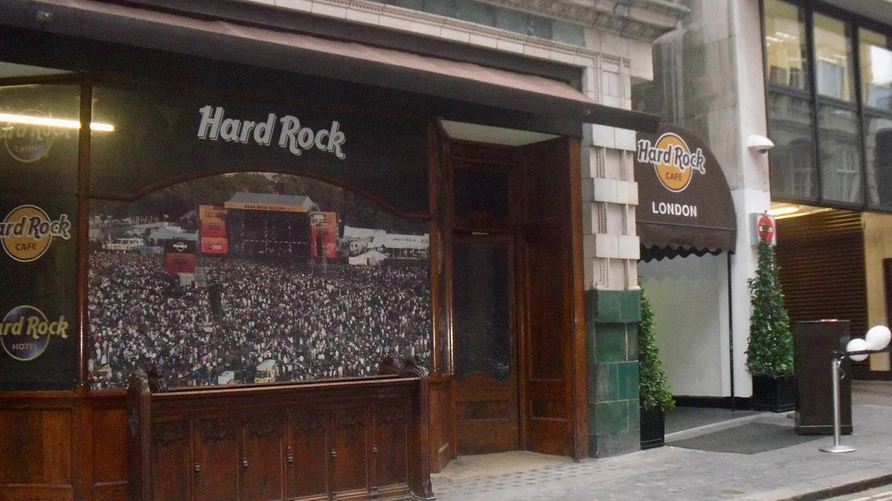
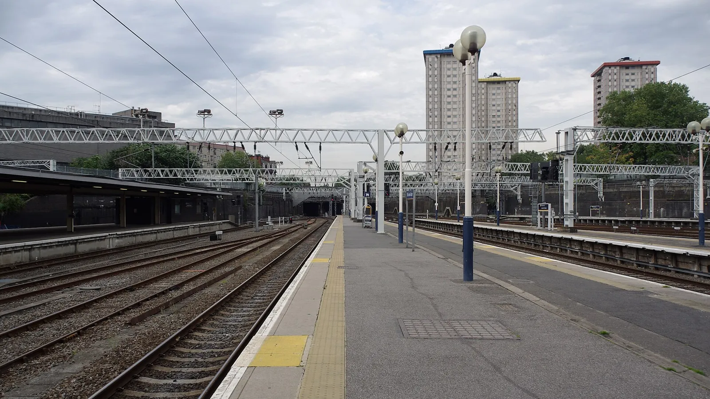
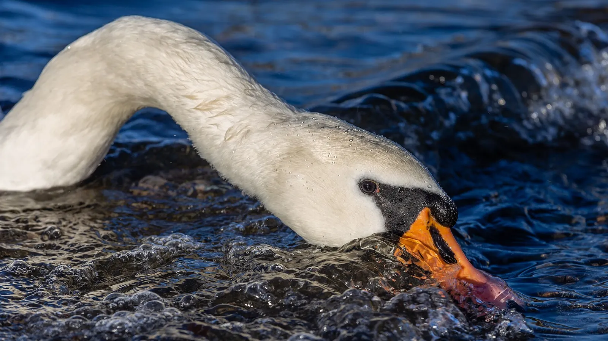
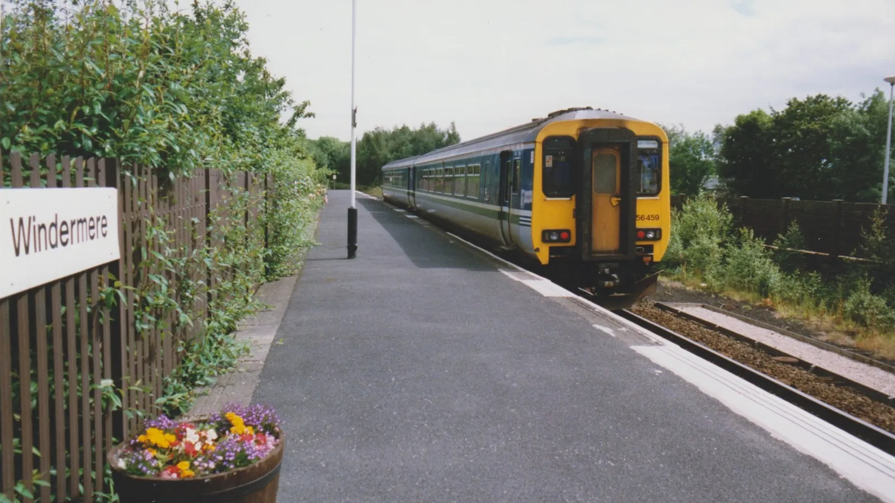
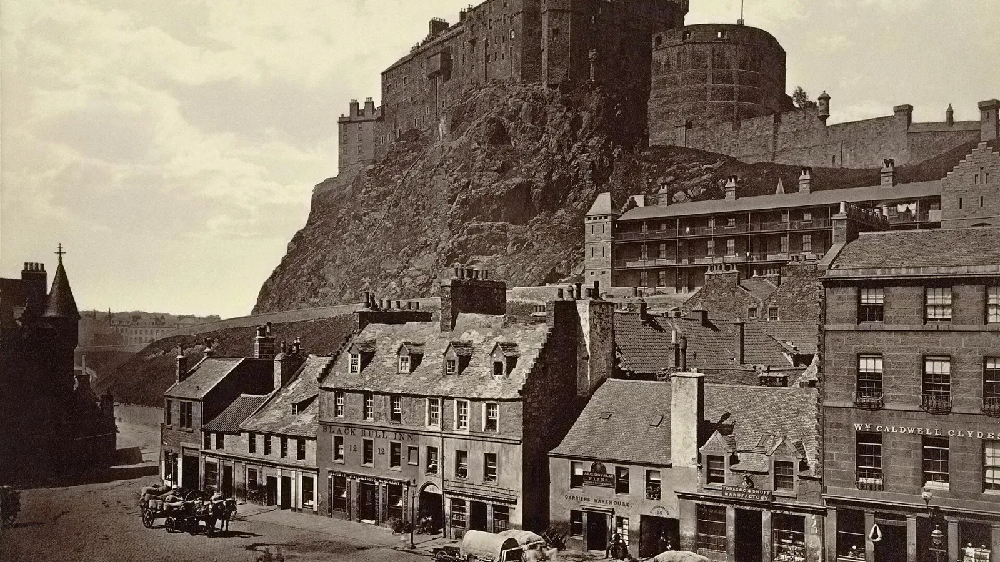
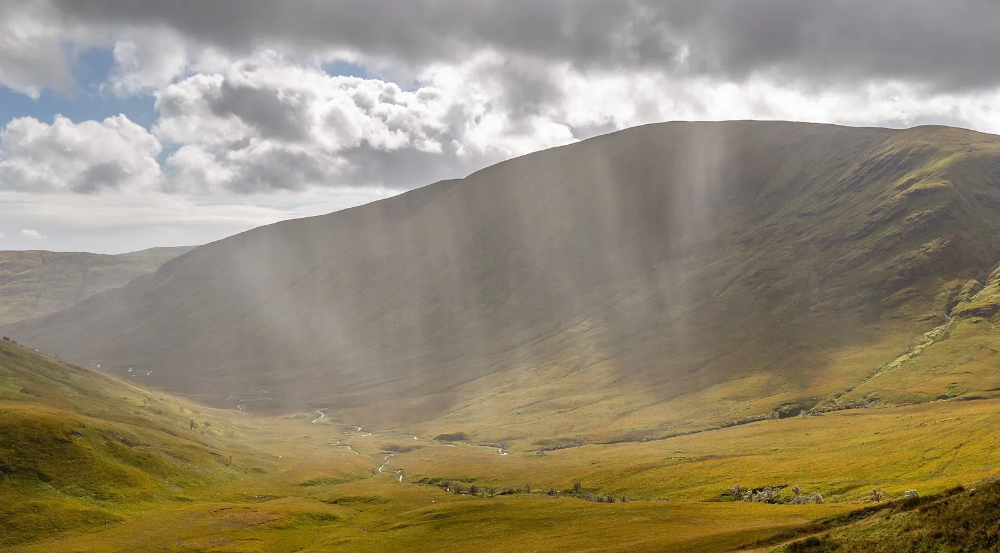
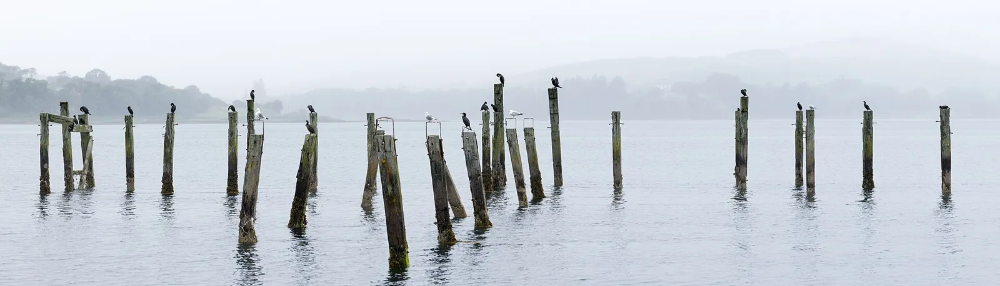
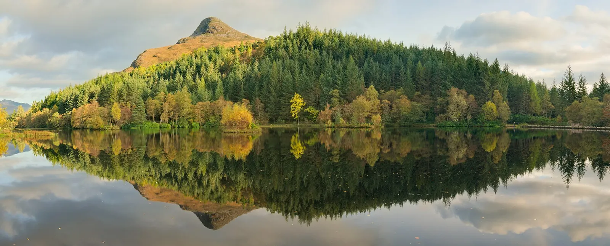
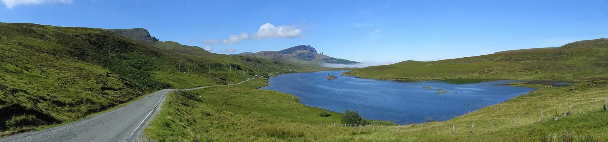
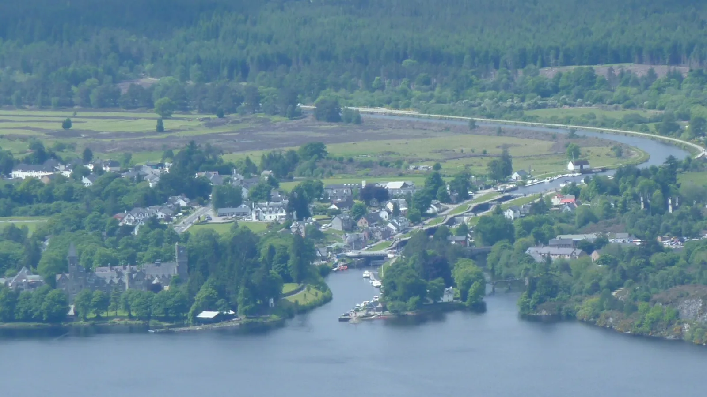

Where you go
The journey on one map
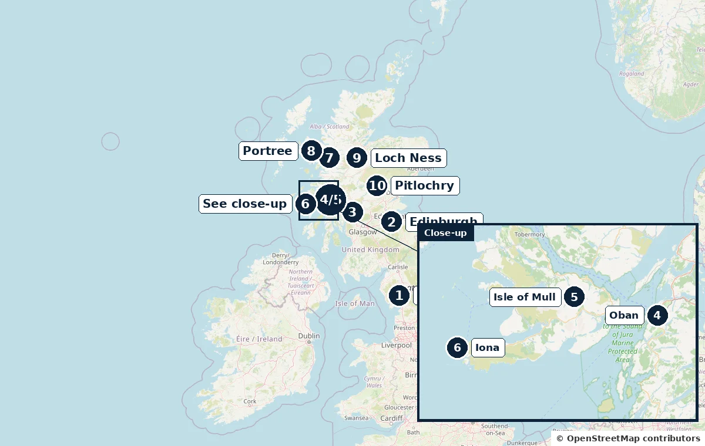
LondonWindermereEdinburghLoch LomondObanIsle of MullIonaEilean Donan CastlePortreeLoch NessPitlochryEdinburgh
Day by day, in short
Daily travel brief
Distances are by road for the whole day. The full plan with timings comes with your detailed itinerary.
-
1
Arrive in London and a West End show
- Into central London: tap the same contactless card or phone at every Tube and bus barrier; daily fares are capped, so there is no need for an Oyster card.
- A West End show: arrive 30 minutes early; bags are checked at the door.
-
2
London's sights and a Thames dinner cruise
Westminster Abbey Tower of London
- Changing of the Guard at Buckingham Palace: the ceremony runs on set days only, and is cancelled in very wet weather.
- Thames dinner cruise: smart casual.
-
3
Hard Rock Café, Oxford Street and Hamleys
- Option instead: the British Museum (free entry) or the Natural History Museum in South Kensington.
-
4
Train to the Lake District
- Train to Windermere: book seats in advance: walk-up fares on this route are very high.
- Keep luggage to one medium case per person: you carry it on and off the trains yourself.
-
5
Lake Windermere and the fells
- Orrest Head walk: paths can be muddy even in summer.
- Local buses link Windermere, Ambleside and Grasmere; your hotel can also book a private driver.
-
6
-
7
Edinburgh and the Scotch Whisky Experience
The Scotch Whisky Experience Palace of Holyroodhouse
- Edinburgh Castle: book a timed ticket online; summer slots sell out days ahead.
- Tomorrow's tour leaves early from the Royal Mile.
-
8
Loch Lomond and the West Highlands to Oban
- Join your small-group Highland tour: be at the departure point 15 minutes early; the coach does not wait.
- Midges (tiny biting flies) are out on still summer evenings in the west.
-
9
Mull, Iona and Staffa
- Iona Abbey is still a place of worship.
- Boat to Staffa and Fingal's Cave: staffa boats run from about April to mid-October and are cancelled in rough seas.
-
10
Glencoe, Eilean Donan Castle and over the bridge to Skye
- Eilean Donan Castle: castle tickets are not included; allow about 1 hour inside.
- Portree has few restaurants for its summer crowds.
-
11
-
12
Loch Ness and Pitlochry back to Edinburgh
- This is the longest day of the trip, with comfort stops about every 2 hours.
-
13
Fly home from Edinburgh
- Transfer to Edinburgh Airport: leave 3 hours before an international flight.
- Whisky and shortbread go in checked baggage.
Local know-how
Travel hacks from our desk
Hotel deposit
Use a credit card for the deposit or pre-authorisation at check-in, never a forex or debit card. Forex cards cannot hold funds, many hotels refuse them, and a credit-card hold is released faster.
Cards and cash
On card machines, always choose to pay in pounds sterling, never in INR. Contactless cards and phones work on every bus, Tube and train ticket barrier. Many places are card-only.
Trains and Oyster
In London, tap a contactless card or phone at the barriers instead of buying an Oyster card: daily fares are capped automatically. Book long-distance trains in advance for the lowest fares.
Plugs and weather
Plugs are the three square-pin type G at 230 volts; Indian plugs need an adaptor. Weather changes fast, even in summer: pack a light rain jacket and layers.
Tipping
Restaurants often add a 12.5% service charge. If not, 10% is normal. Pubs do not expect tips at the bar.
When to go
Best time to visit for this journey
Late May to early September; June for the longest days.
Late May to early September: the longest days, the warmest weather and every boat running. June and July, as in the original plan, are ideal.
The package
What's included
Included
- 12 nights with breakfast
- West End theatre tickets
- Thames dinner cruise
- Hard Rock Café lunch and Vault tour
- Hop-on hop-off bus passes in London and Edinburgh
- Scotch Whisky Experience tour
- 5-day guided small-group Highland and islands tour from Edinburgh
- 24/7 support from Blue Diamond Voyage
Not included
- International flights
- UK visa
- Train tickets London to Windermere to Edinburgh (we book them for you)
- Entry fees on the Highland tour, including Iona Abbey, Staffa and Eilean Donan
- Meals not listed
- Travel insurance
- Tips and porterage
The detailed itinerary
Some journeys are planned. Ours are crafted.
The full 13-day plan is ready: hour-by-hour timings, drive times, temple dress codes, food for your diet and a route map for every day. Tell us your dates and your city, and we'll send it to you on WhatsApp, shaped around you.
- Hour-by-hour timings
- A route map for every day
- Hotel and room details
- Visa and entry steps
- Vegetarian and Jain dining
24/7 travel desk+91 97148 59797+91 98242 21400
Photo and map credits
- Heathrow Airport: Adrian Pingstone, Public domain, via Wikimedia Commons
- Buckingham Palace: Diliff, CC BY-SA 3.0, via Wikimedia Commons
- Hard Rock Cafe London: Lauren, CC BY-SA 2.0, via Wikimedia Commons
- London Euston: mattbuck (category), CC BY-SA 3.0, via Wikimedia Commons
- Lake Windermere: Michal Klajban, CC BY-SA 4.0, via Wikimedia Commons
- Windermere railway station: Richard Sutcliffe, CC BY-SA 2.0, via Wikimedia Commons
- Edinburgh Castle: George Washington Wilson / Adam Cuerden, Public domain, via Wikimedia Commons
- Luss: Michal Klajban, CC BY-SA 4.0, via Wikimedia Commons
- Isle of Mull: Colin, CC BY-SA 3.0, via Wikimedia Commons
- Glencoe: Daniel Kraft, CC BY-SA 3.0, via Wikimedia Commons
- Old Man of Storr: Klaus with K, CC BY-SA 3.0, via Wikimedia Commons
- Fort Augustus: Ian Stewart, CC BY-SA 2.0, via Wikimedia Commons
- Edinburgh Airport: Thomas Nugent, CC BY-SA 2.0, via Wikimedia Commons
- Maps: © OpenStreetMap contributors; road routes by OSRM.